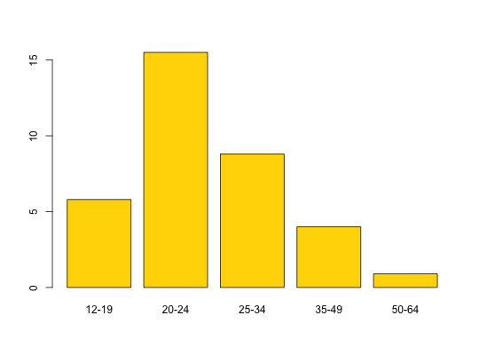

Data for Exercise 1.20
Domestic
A data frame with 5 observations on the following two variables.
12-19, 20-24,
25-34, 35-49, and 50-64Kitchens, L. J. (2003) Basic Statistics and Data Analysis. Duxbury
str(Domestic)#> 'data.frame': 5 obs. of 2 variables: #> $ age : Factor w/ 5 levels "12-19","20-24",..: 1 2 3 4 5 #> $ rate: num 5.8 15.5 8.8 4 0.9 #>barplot(Domestic$rate, names.arg = Domestic$age)## Not run: ------------------------------------ # ggplot2::ggplot(data = Domestic, aes(x = age, y = rate)) + # geom_bar(stat = "identity", fill = "purple", color = "black") + # labs(x = "", y = "Domestic violence per 1000 women") + # theme_bw() ## ---------------------------------------------